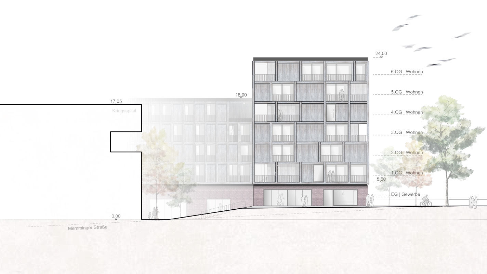
WBW ehemaliges Kriegsspital
Entwicklung Areal ehemaliges Kriegsspital, Neu-Ulm
- Kategorie
- Arbeiten · Beleben · Essen · Wettbewerbe · Wohnen
- Standort
- Neu-Ulm
- Auslober
- Panescu Immobilien GmbH & Co. KG
- Wettbewerb
- 2023
Galerie
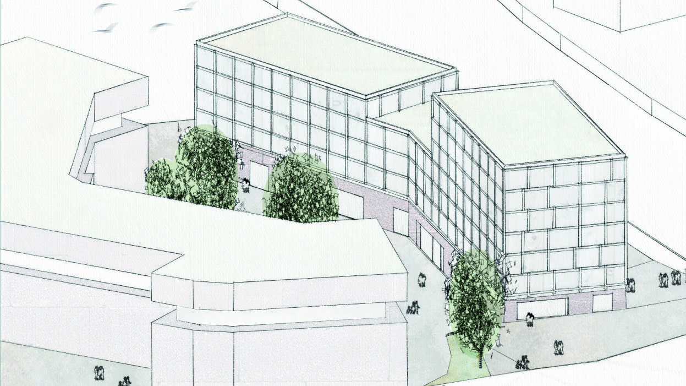
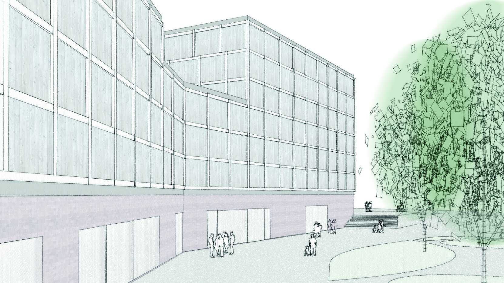
01 — Städtebau & Konzept
Die neue Erweiterung bildet ein Ensemble mit dem Kriegsspital und kommuniziert durch eine angemessene Körnung, Höhenentwicklung und Maßstäblichkeit mit dem umliegenden Stadtraum, welcher mit zusätzlichen Wohn- und Geschäftsräumen aufgewertet wird. Die neue aufgespannte Freifläche zwischen Kriegsspital und der Erweiterung nimmt Bezug auf das historische Vorbild und gibt der Örtlichkeit dadurch die historische Aufenthaltsqualität zurück. Die Planung sieht neben einem nachhaltigen Energiekonzept, sorgfältig ausgewählten Ressourcen bzw. Materialien auch eine damit Hand in Hand gehende wirtschaftliche Bauweise vor.
02 — Sockelgeschoss
Das Sockelgeschoss erfüllt den Anspruch an eine flexible und damit nachhaltig bzw. langlebige Gewerbefläche. Gleichzeitig bildet das Geschoss eine strukturelle Plattform für die oberen Geschosse. In Anlehnung an die Massivität des Kriegsspitals wird im Sockelbereich Gisoton als zertifizierter und energieschonender Baustoff eingesetzt. Eine Zwischenebene in der aktuellen Gewerbeeinheit 6 ermöglicht die Nutzung und Erschließung einer weiteren Ebene. Dadurch wird auf unterschiedlichen Ebenen der Zugang und Austausch zwischen dem Areal des Kriegsspitals und dem bestehenden Stadtraum ermöglicht.
Stimme
„Platzhalter — ein bis zwei Sätze des Bauherrn oder der Projektleitung.“
03 — Obergeschoss
Die Obergeschosse werden auf dem Sockel mit einer wirtschaftlichen Holzbauweise realisiert. Der Anspruch an eine materialgerechte Architektur wird mit einer Holzfassade komplimentiert. Aufgrund eines effizienten Rasters können verschiedene Wohnungsgrößen flexibel zu einem zeitgemäßen Wohnen zusammengeschlossen werden. Durch das Raster sind die Voraussetzungen für eine zukunftsweisende serielle Bauweise gegeben. Da insbesondere die Nordseite des Gebäudes durch den Schalleintrag der Bahnlinie beeinträchtigt wird, sind hier die Fenster mit einer erhöhten Schallschutzanforderung vorgesehen. Loggien erhalten teilweise eine starre, teils verschiebbare Verglasung. Dadurch wirken die Loggien als Emissionsfilter, über welche auch die manuelle Lüftung der angrenzenden Räume möglich ist.
04 — Energieversorgung
Da das Areal bereits an das Fernwärmenetz der Stadtwerke angeschlossen ist, ist damit eine umweltschonende Energieversorgung garantiert. Die Dachflächen dienen als Rückgewinnung von Grünflächen der damit verbundenen Speicherung von Wasser sowie für die Gewinnung von Solarflächen. Eine Aktivierung der Dachfläche als Nutzgarten für die Bewohner ist durch die flexible Rasterung der Wohneinheiten ebenfalls möglich.
Pläne
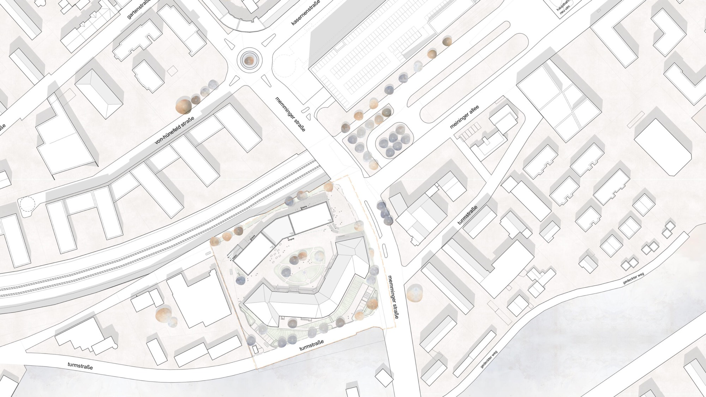
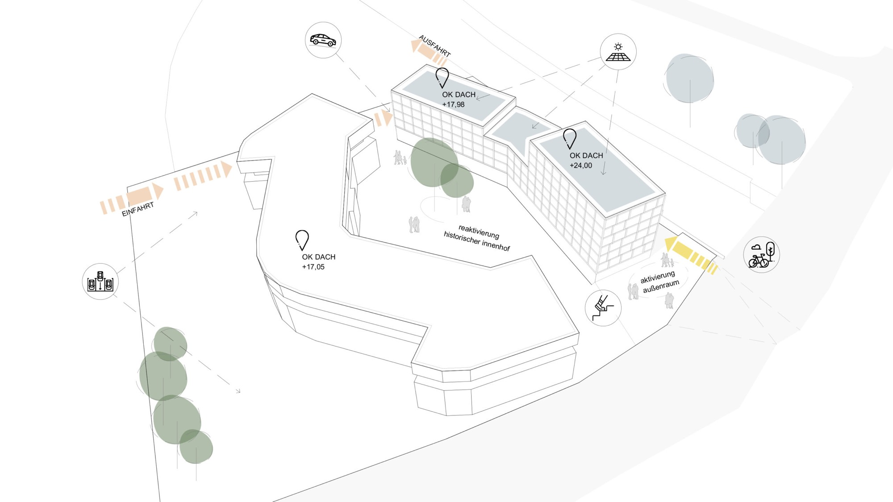
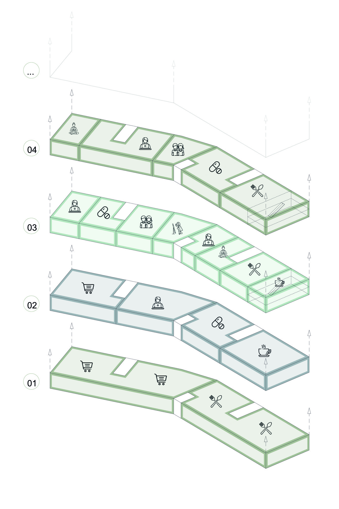
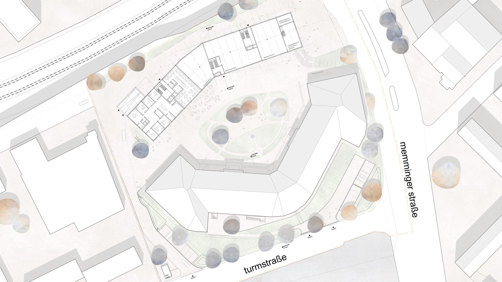
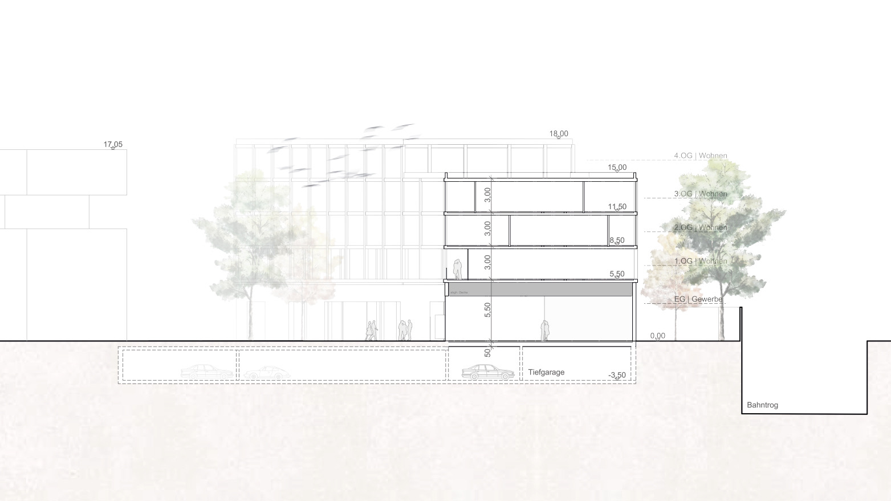
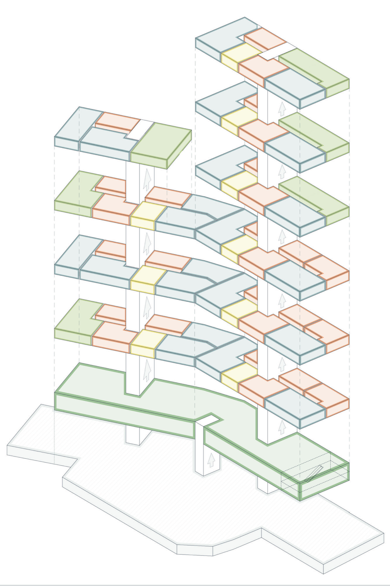
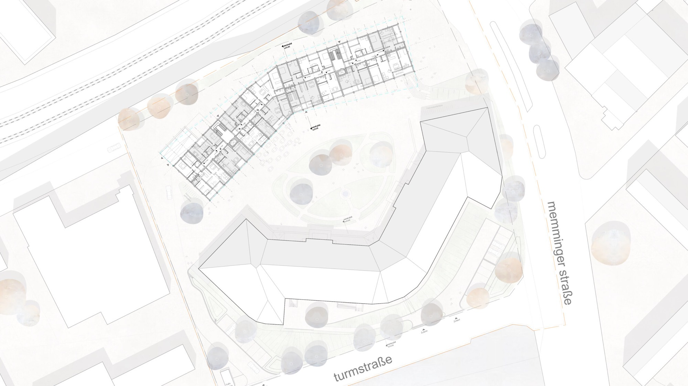
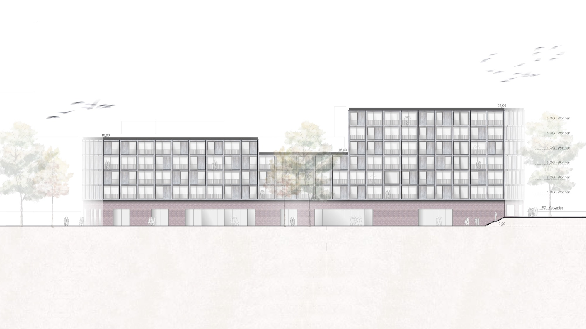
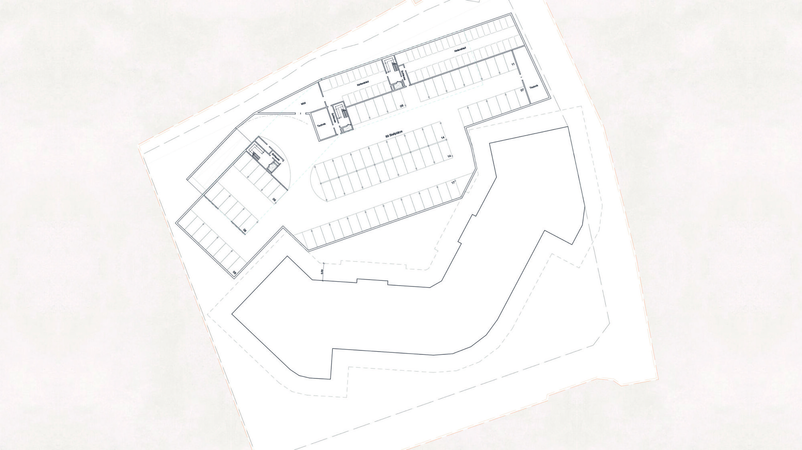
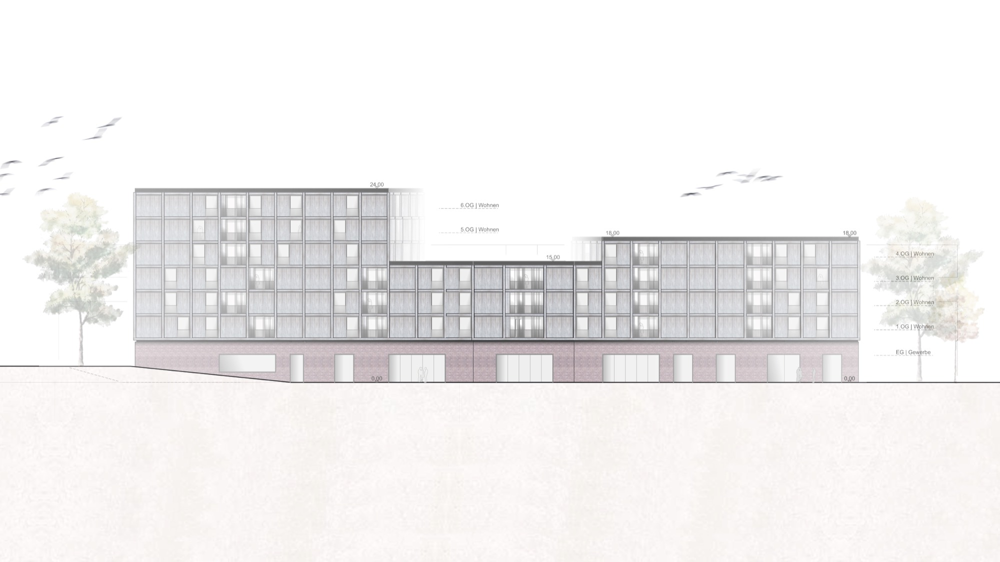
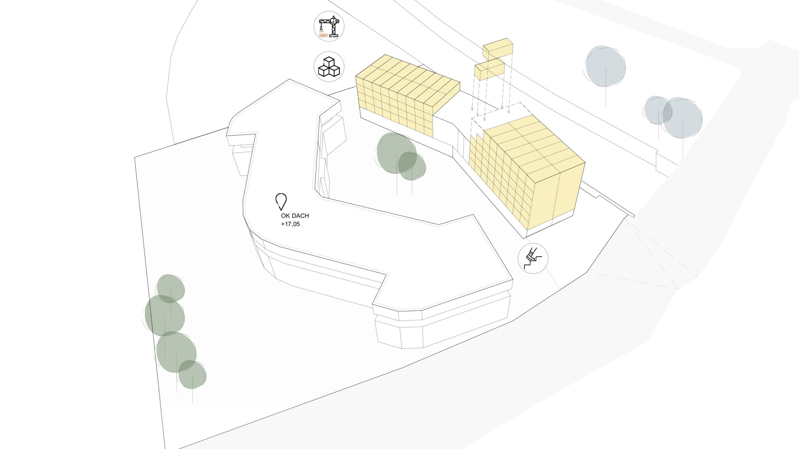
Projektdaten
Projekt
- Nutzung
- Nutzung ergänzen
- Erbrachte Leistungen
- Objektplanung, Generalplanung — ergänzen
- Zertifikate
- Zertifizierung ergänzen
- Fotografie
- Fotograf:in ergänzen
- Veröffentlichungen
- Publikation, Medium, Jahr — ergänzenPublikation, Medium, Jahr — ergänzen
Team
- Name ergänzen
- Name ergänzen
- Name ergänzen
Kontakt
Fragen zum Projekt
Wir sprechen gern über die Herausforderungen und die Konzepte unserer Projekte. Kommen Sie gern auf uns zu, wir freuen uns auf den Austausch.